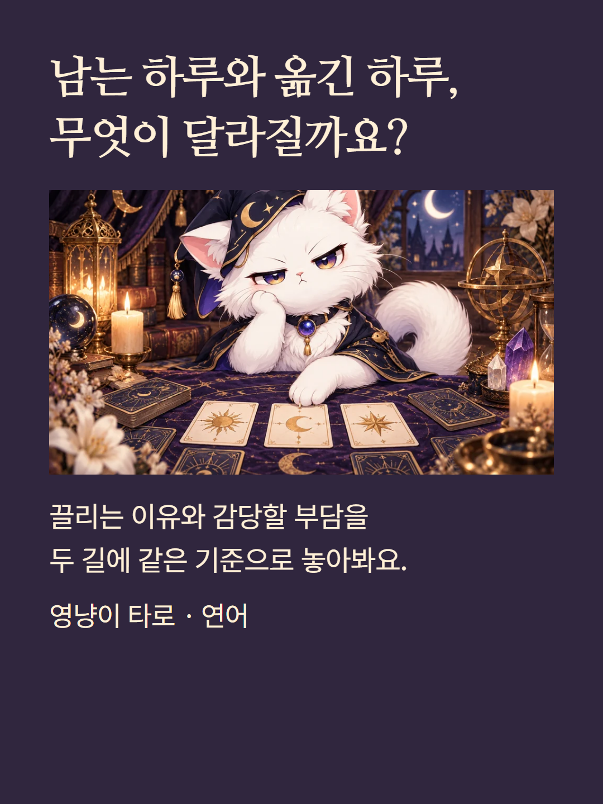
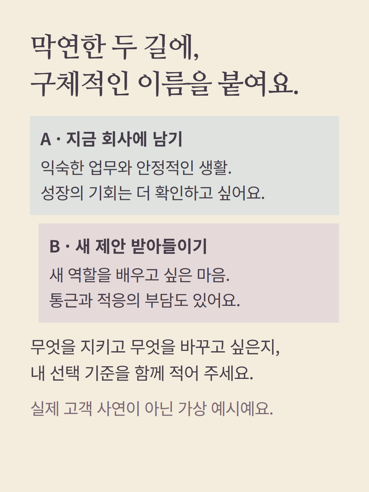
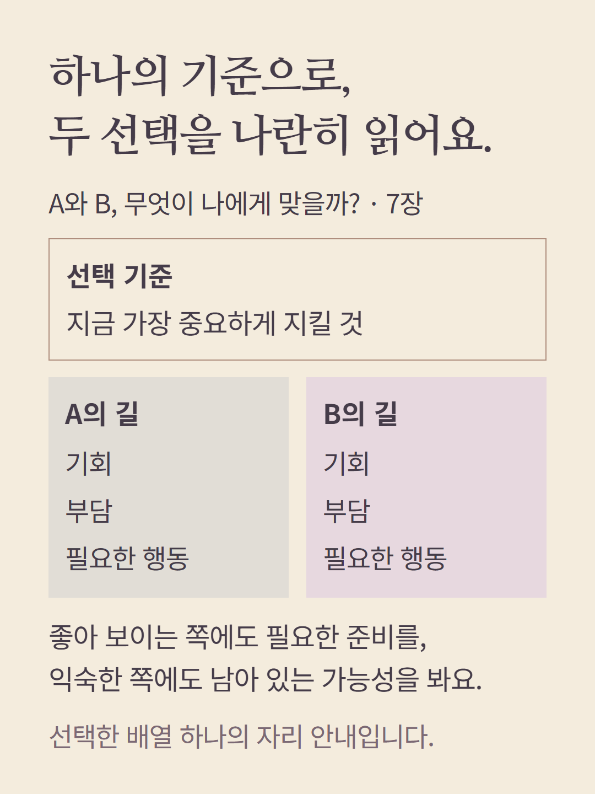
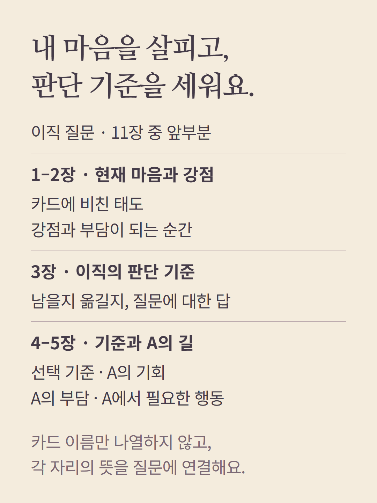
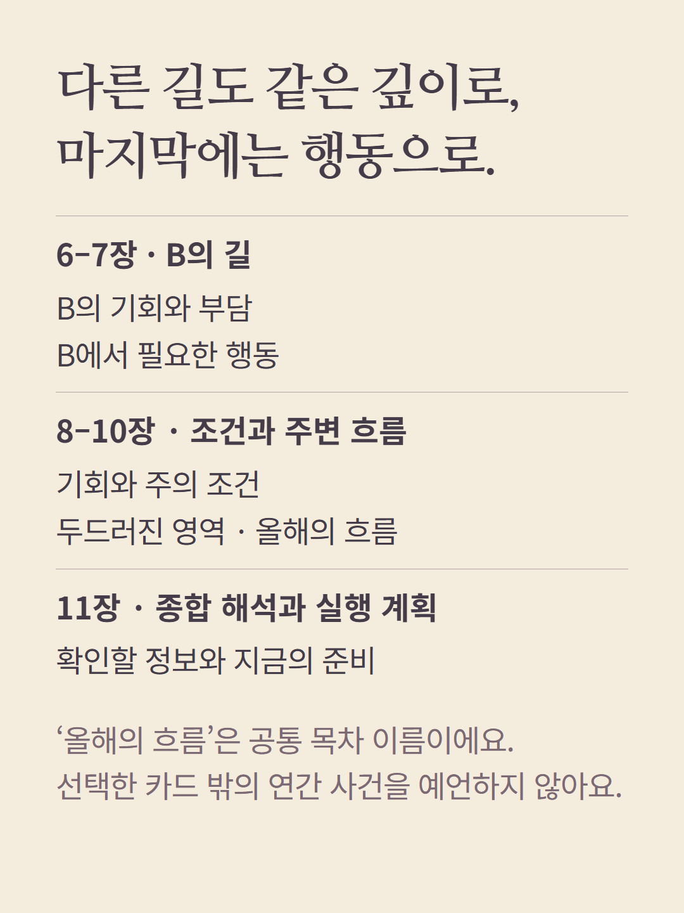
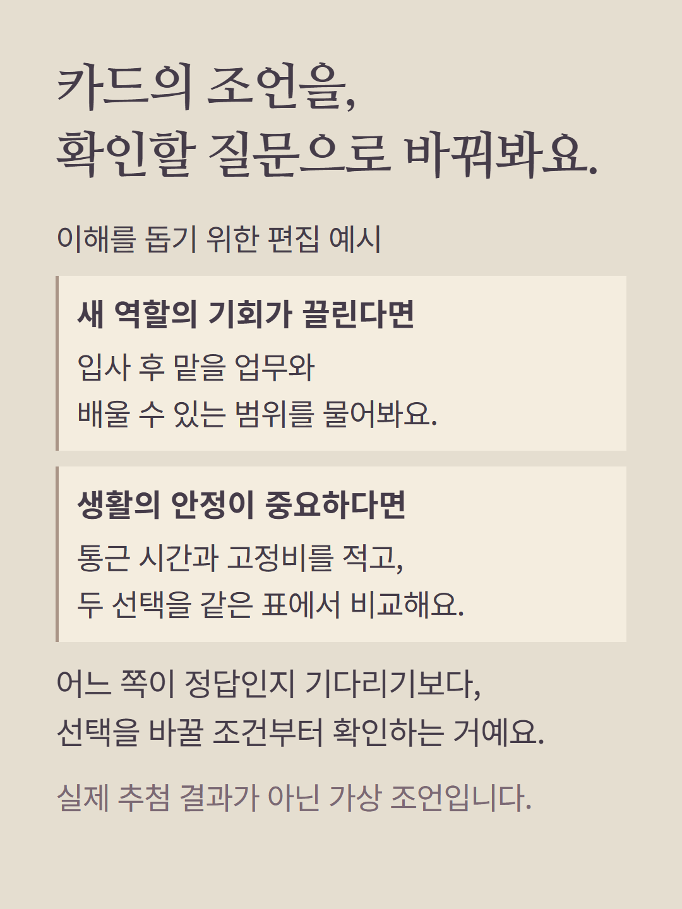
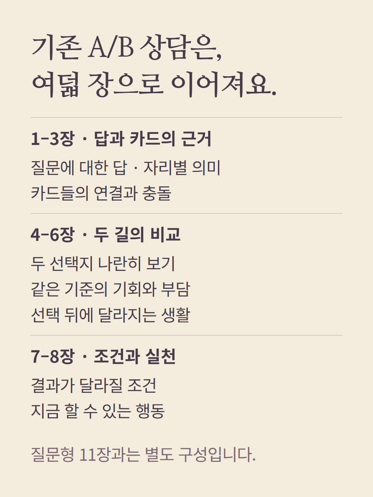
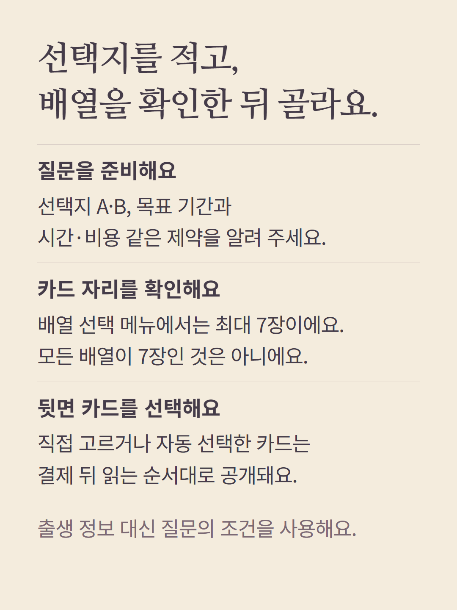
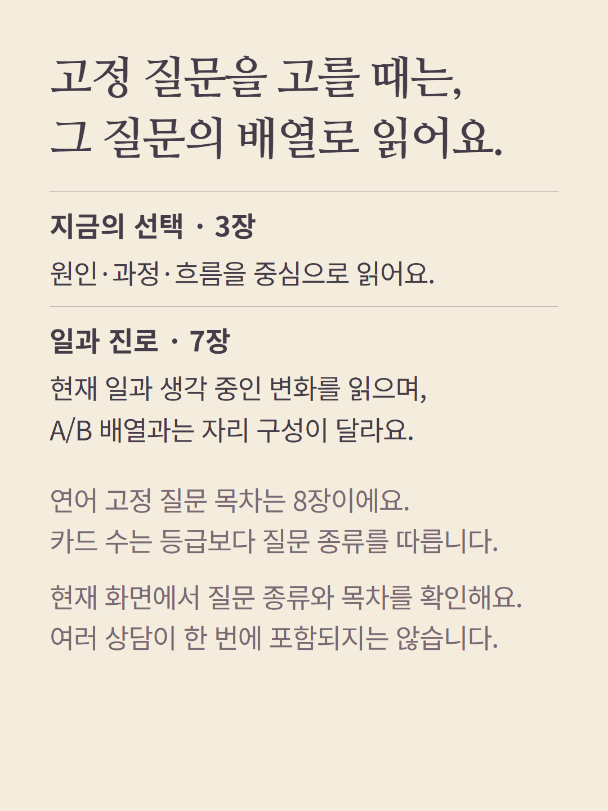
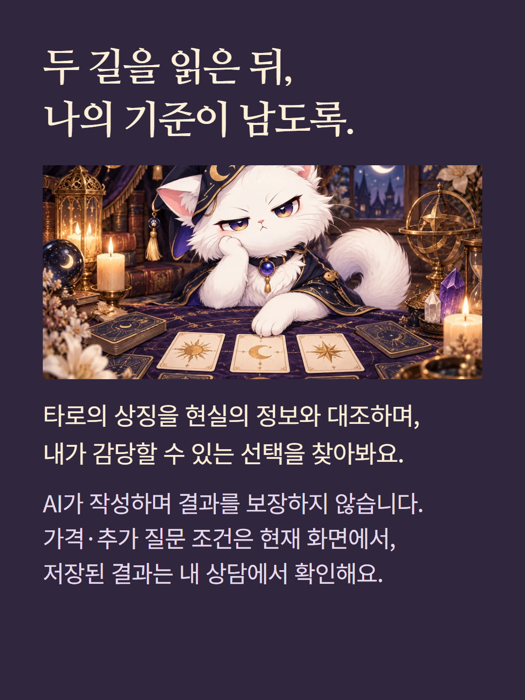

타로 연어의 ‘질문으로 고르는 배열’은 최대 7장 범위에서 배열 하나를 선택합니다. 이 안내의 A/B 비교 배열은 선택 기준 하나와 각 선택지의 기회·부담·행동을 읽는 7장입니다. 이직 질문형 목차는 11장, 기존 A/B 배열 상담은 8장입니다. 선택한 배열과 진입에 따라 카드 자리·목차가 달라지며 여러 상담이 한 번에 포함되지 않습니다. 두 선택지는 같은 기준으로 비교하고 합격·수익·사건 날짜를 보장하지 않습니다. 질문과 선택지, 목표기간·제약을 바탕으로 읽으며 출생 정보는 쓰지 않습니다. 예시는 가상 편집이며 AI 작성 상담입니다. 가격·추가 질문 조건은 기존 화면에서 확인하세요. 기존 고정 질문 메뉴는 등급과 무관하게 종류별 카드 수를 사용하며 별도로 선택합니다.